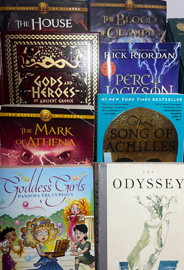

Entry 4.1:
Visual Thinking Analysis part 1
The image is about a collection of books, specifically focusing on Greek mythology. Most of them seem to be fictional fantasy works based on Greek mythology tales and characters. What is interesting about this collection is that it goes into depth of the genre from source material like Odyssey to stories inspired by them like the Percy Jackson series. These definitely sparked my nostalgia because I was reading Percy Jackson during my middle school days, and I had a time when I was really interested in Greek mythology too. My suggestion would be to play around with the layout of the collection, because it's hard to see a narrative or purpose with this image.
